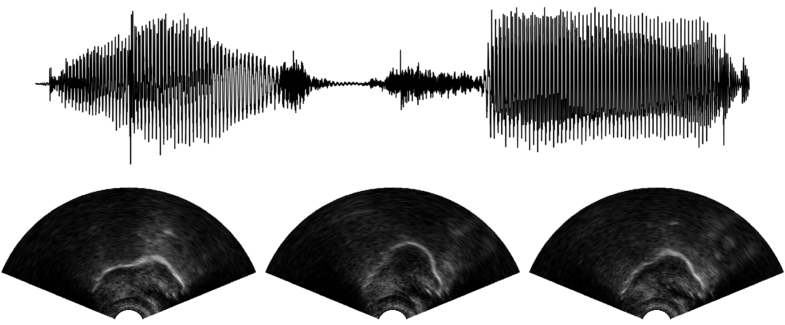

UltraSuite Repository
A repository of ultrasound and acoustic data from child speech therapy sessions
Ultrasuite is a collection of ultrasound and acoustic speech data from child speech therapy sessions. The current release includes three datasets, one from typically developing children and two from speech disordered children. Ultrasuite also includes a set of annotations, some manual and some automatically produced, and tools to process, transform and visualise the data. Read the Ultrasuite paper here!
Ultrasuite also distributes the Tongue and Lips (TaL) corpus, a multi-speaker corpus of synchronised ultrasound images of the tongue and video images of lips. Read the TaL paper here!.

Data
There are three child speech datasets available in the repository:
- Ultrax Typically Developing - UXTD. A dataset of 58 typically developing children. See here for further details.
- Ultrax Speech Sound Disorders - UXSSD. A dataset of 8 children with speech sound disorders. See here for further details.
- UltraPhonix - UPX. A second dataset of children with speech sound disorders. The data was collected from 20 children. See here for further details.
- The Cleft Dataset - Cleft. A dataset of children with cleft lip and palate. The data is available for 29 children. See here for further details.
And two datasets of adult speech:
- Tongue and Lips corpus - TaL1. A single-speaker dataset with data of one professional voice talent, a male native speaker of English, over six recording sessions. Read about the TaL corpus.
- Tongue and Lips corpus - TaL80. A multi-speaker dataset with recording sessions of 81 native speakers of English without voice talent experience. Read about the TaL corpus.
Code
- Ultrasuite Tools - Python library to process raw ultrasound data.
- Ultrasuite Kaldi - Recipes and other code to use UltraSuite data with the Kaldi Speech Recognition Toolkit.
- TaL Tools - Resources for the Tongue and Lips corpus.
Contributing
We welcome user contribution to Ultrasuite! We are hoping to keep Ultrasuite in active development with help from the community. All contributions will be given proper credit! There are various ways to participate:
Contributing with data
The current release of Ultrasuite has three datasets of ultrasound and audio from child speech and two datasets of adult speech, but we hope to include additional datasets in the future. If you'd like to share data that you collected, please get in touch with any member of the Ultrax Speech project. We are also happy to host any resources that you have generated for current Ultrasuite datasets (e.g. annotations, scores, tongue splines, etc). Note that even though data is available through UltraSuite, we encourage users to cite the original authors.
Contributing with code
To contribute with code or to help improve this documentation, please submit your changes with Pull Requests.
Reporting issues
To report any issues, you can use GitHub's Issue Tracker or you can contact any member of the Ultrax Speech project. Please submit any issues related to code in their respective repositories using Github's Issue Tracker. For issues found in the data, please contact us directly.
Community
Subscribe to the UltraSuite mailing list to get updates from the UltraSuite repository and to send and receive messages from other UltraSuite users.
License
Datasets from UltraSuite are distributed under Attribution-NonCommercial 4.0 Generic (CC BY-NC 4.0). Code is available under the Apache License v.2.
Citations
If using data from UXTD, UXSSD, or UPX, please cite the following paper:
- Eshky, A., Ribeiro, M. S., Cleland, J., Richmond, K., Roxburgh, Z., Scobbie, J., & Wrench, A. (2018) Ultrasuite: A repository of ultrasound and acoustic data from child speech therapy sessions. Proceedings of INTERSPEECH. Hyderabad, India. [paper]
If using data from the Tongue and Lips (TaL) corpus, please cite the following paper:
- Ribeiro, M. S., Sanger, J., Zhang, J.-X., Eshky, A., Wrench, A., Richmond, K.,& Renals, S. (2021). TaL: a synchronised multi-speaker corpus of ultrasound tongue imaging, audio, and lip videos. Proceedings of the IEEE Workshop on Spoken Language Technology (SLT). Shenzhen, China. [paper]